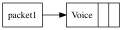
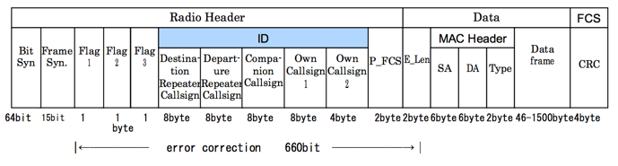

Voice and Data Packets¶
Here is a more complex example from one of the many tutorials on the Internet:
![digraph structs {
node[shape=record]
rankdir="BT";
struct1 [label="<f0> Header|<f1> data|<f2> FCS"];
struct2 [label="{<f0> Radio Header|{Bit\nSyn\n64bit|Frame\nSyn\n15bit|Flag\n1\n8bit|Flag\n2\n8bit|Flag\n3\n8bit|<f1> ID\n284bit|P_FCS\n16bit}}" shape=Mrecord];
struct3 [label="{<f0>Data|{E_Len|{MAC Header|{SA|DA|TYPE}}|Data\nFrame}}" shape=Mrecord];
struct4 [label="{<f0> FCS|{CRC}}" shape=Mrecord];
struct5 [label="{<f0> ID|{Destination\nRepeater\nCallsign|Departure\nRepeater\nCallsign|Companion\nCallsign|Own\nCallsign}}" shape=Mrecord];
rankdir="TB";
struct1:f0 -> struct2:f0;
struct1:f1 -> struct3:f0;
struct1:f2 -> struct4:f0;
struct2:f1 -> struct5:f0;
}](../_images/graphviz-46c99252a41a8f4bb2b8bab501ea77913ccf4186.png)
For reference, here is the diagram from the specification document:
Packet Fields¶
Radio Header¶
Bit Synchronization¶
This field is used by hardware to synchronize the transmission of packets. It consists of 64 bits sent as 16 repeated four bit patterns:
- GMSK: 1010
- QPSK: 1001
These bits are transmitted left to right.
Frame Synchronization¶
THis field is a 15 bit pattern used to identify the start of a frame. The pattern is this:
- Frame Syn: 111011001010000
(I am sure there is a reason for this pattern, I need to check into that!)
FLag Bits¶
There are three flag bits:
Flag 1: 8 bits with these meanings
Bit 7:
- 1 = data
- 0 = voice
Bit 6:
- 1 = signal goes through a repeater
- 0 = local communications between terminals
Bit 5:
- 1 indicates communications interruption exists
- 0 = no interruption
Bit 4:
- 1 = this is a control signal
- 0 = Normal signal (voice or data)
Bit 3:
- 1 = urgent priority (emergency communications)
- 0 = normal priority
Bits 0-2:
- 111 = repeater station control (data contains control data)
- 111 = auto reply
Flag 2: 8 bits for future expalsion
Flag 3: 8 bits used to match control functions t protocol versions (future use)
- 101 = unused
- 100 = resent flag (resend previous frame)
- 011 = ACK flag
- 010 = no reply flay (no reply is available)
- 001 = relay unavailable flag (unsuitable relaying conditions)
- 000 = NULL (no information)